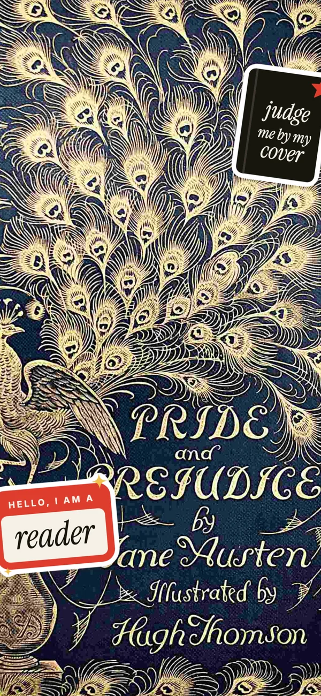
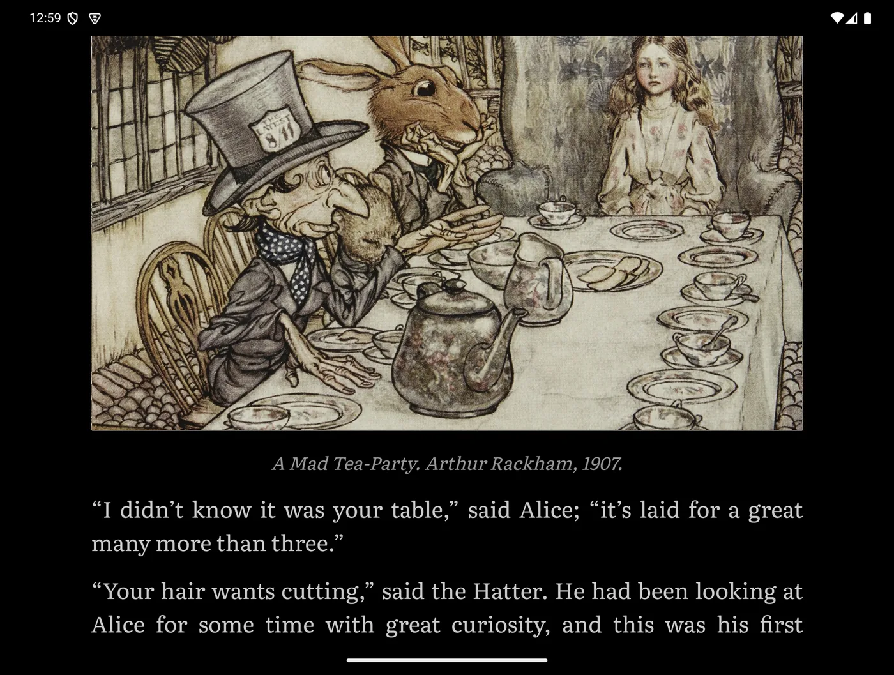
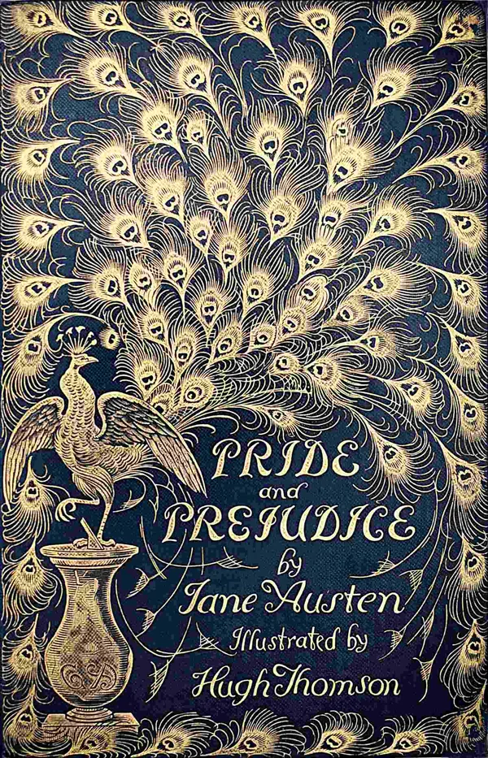
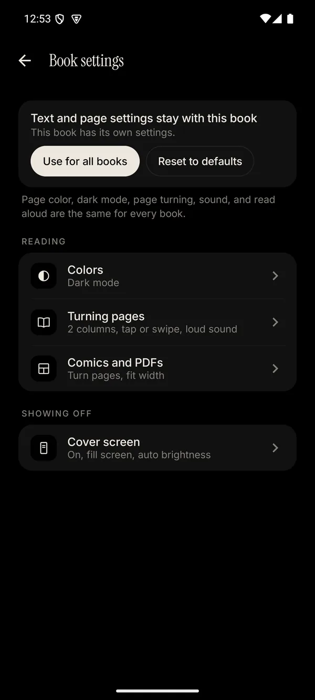
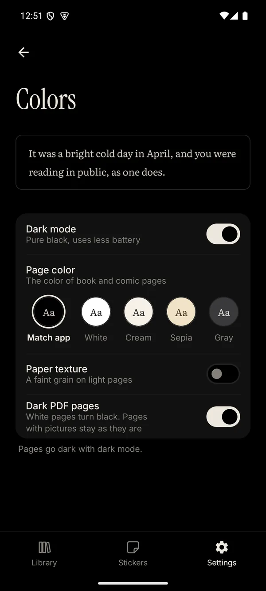

An e-reader for the Galaxy Z Fold 8
You read on the big screen inside. Your book's cover shows on the outside, for the whole train to see. Reading was always cool. Now it's visible.
No ads. No account. No subscription. Just books.

The trick

A page curl that feels like paper, two pages side by side when you want them, and a pure black dark mode that's easy on your eyes and your battery.
Close the phone and it stays up, like a book you left on a café table. On purpose. Obviously.
Features
Pick one. I won't tell anyone. Your cover screen might, though.
You didn't buy a foldable to hide it.

You've read the whole series. Twice.

It's 2 AM and you said "one more chapter" an hour ago.

Panels over paragraphs. No notes.
Your eyes are tired. Your book isn't.
"Your hair wants cutting," said the Hatter. He had been looking at Alice for some time with great curiosity, and this was his first speech.
"You should learn not to make personal remarks," Alice said.
You'd read more if there were prizes. So now there are.
FAQ
Starting with the important ones.
Yes. There are no ads, no trackers, and no account. Your books never leave your phone.
There isn't even a Performatively server, so there's nothing for me to leak, sell, or lose.
Only for sync, and only if you turn it on. Sign in with Google, and it saves your place in each book to a hidden folder in your own Google Drive. Not your books, files, stickers, or highlights.
Skip sign-in, and the app never goes online. You can delete the synced data anytime in Settings.
Only the book folders you pick, through Android's own folder picker. Nothing else.
Read aloud uses your phone's own voices, so what you read stays on your phone too.
It's AI-assisted. Every idea, feature, design, sticker, and word is mine. AI helps me write the code faster.
Then I test every build on my own Fold 8, real testers try each update, and Google Play checks it before it goes out. Nothing ships just because a robot said it was fine.
It's made for the Galaxy Z Fold 8. Other foldables with an outer screen may work too.
On a regular phone, you can still read and show your decorated cover full screen. You'll need Android 14 or newer.
Probably not. Books from Kindle and most stores are locked to their own apps. DRM-free EPUBs, PDFs, TXT files, and comics all work.
You pay once. No ads, no subscription, and no premium version hiding the good stuff.
It's being tested on Google Play right now. So, really soon. Like, really soon.
Your next book deserves an audience.
Questions or bugs? bunsoootchi@gmail.com